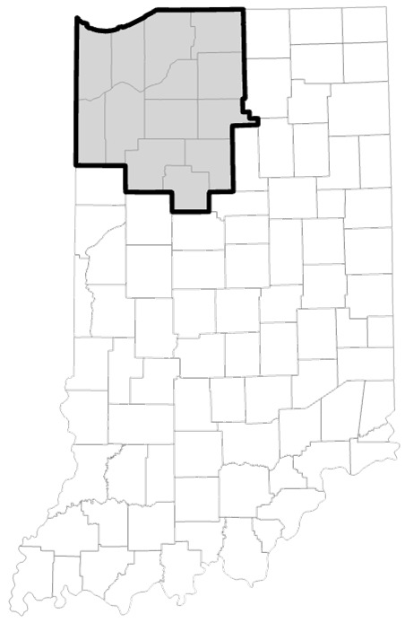
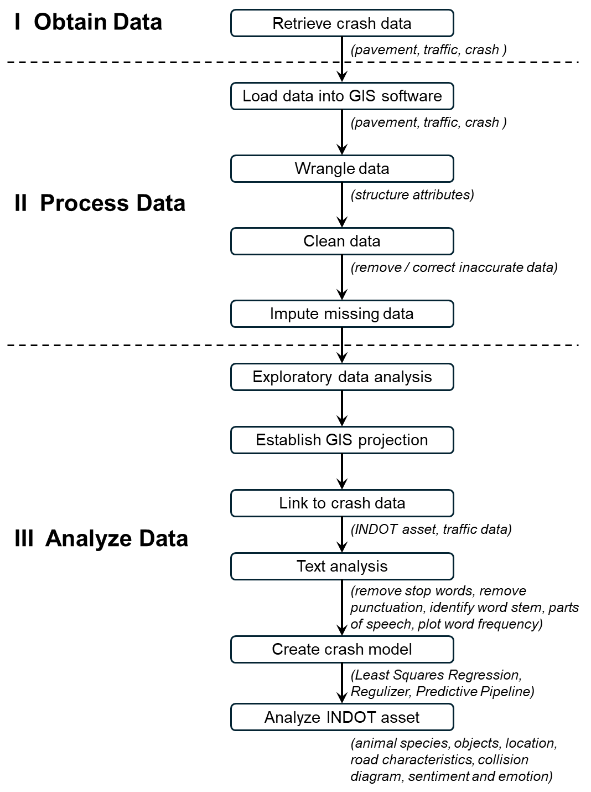
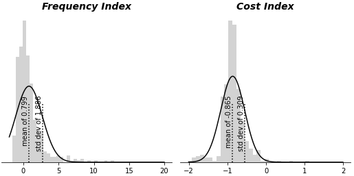
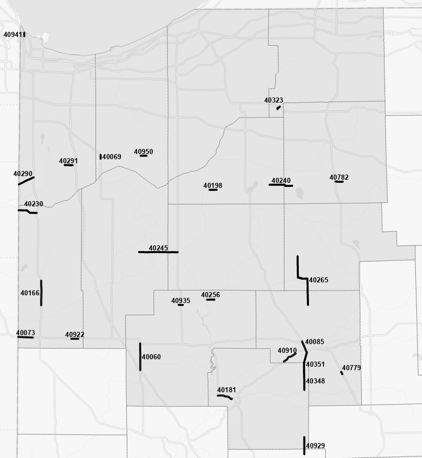
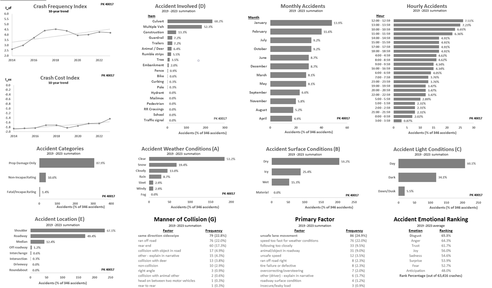

To support its mission of developing and maintaining a resilient, zero-defect distribution network, the organization places a critical focus on system safety and risk mitigation. While analysts historically relied on labor-intensive, manual reviews of individual incident reports, the sheer scale of the global pipeline often limited exhaustive analysis and left vital operational vulnerabilities hidden. To address these visibility constraints, a modernized framework was established utilizing integrated Geographic Information Systems (GIS), natural language processing (NLP), and predictive data modeling to collectively evaluate expansive, unstructured datasets. This advanced approach automates risk vector extraction, enabling the development of robust predictive pipelines that optimize infrastructure investments, streamline resource allocation, and enhance future network configuration and material-routing selection.
Roadway safety
Road safety is more than just a set of rules, such as Title 23 of the Code of Federal Regulations for United States (U.S.) highways, or even catchphrases, such as "better late than never." In our day-to-day lives, it crosses social divisions and geographic boundaries. The Global Roads Inventory Project, which in 2018 converted almost 60 geospatial datasets on road infrastructure into a global roads dataset, is one example of the open-source data and frameworks that gave us useful information about how to improve road safety. Included in the final dataset are 21 million kilometers of roads, which encompassed 222 nations (Meijer 2018). With three million kilometers, or almost 15% of the world's total road network, the United States possesses the largest road network in the world (Symington 2023). However, the United States has roughly 40,000 traffic deaths yearly, which was much less than 15\% of the world's 1.2 million road fatalities (Table 1). Its 3.3% percentage of road fatalities worldwide is far from acceptable, given all crashes are preventable.
Table 1. Annual vehicle crash fatalities
| Year | Globala | USb | Indianac | NWId | NWI-INDOTd | NWI-PKd | % of IN |
|---|---|---|---|---|---|---|---|
| 2010 | 1,258,627 | 35,332 | 701 | 168 | 110 | 88 | 11.7% |
| 2011 | 1,274,237 | 35,303 | 676 | 141 | 90 | 81 | 10.8% |
| 2012 | 1,275,304 | 36,415 | 720 | 143 | 85 | 67 | 8.6% |
| 2013 | 1,258,854 | 35,369 | 710 | 159 | 88 | 80 | 10.2% |
| 2014 | 1,248,372 | 35,398 | 705 | 151 | 84 | 63 | 8.5% |
| 2015 | 1,245,499 | 37,757 | 758 | 145 | 85 | 74 | 9.0% |
| 2016 | 1,252,812 | 40,327 | 781 | 156 | 92 | 73 | 8.8% |
| 2017 | 1,256,190 | 40,231 | 848 | 182 | 112 | 99 | 10.7% |
| 2018 | 1,268,213 | 39,404 | 789 | 177 | 91 | 79 | 9.0% |
| 2019 | 1,282,142 | 39,107 | 746 | 135 | 76 | 63 | 7.8% |
| 2020 | 1,110,000 | 42,339 | 809 | 195 | 102 | 86 | 9.6% |
| 2021 | 1,190,000 | 46,980 | 900 | 188 | 120 | 93 | 10.3% |
| 2022 | — | 46,270 | 964 | 193 | 118 | 96 | 10.0% |
| 2023 | — | 44,450 | 931 | 180 | 103 | 82 | 8.8% |
Indiana has an extensive and intricate road system that spans approximately 150,000 centerline kilometers, primarily in rural areas (INDOT 2023; Holcomb 2022). The governor claims that this plan is "data-driven and establishes the goals, objectives, and strategies to save lives, reduce suffering and limit economic losses that result from motor vehicle crashes by advancing the vision of zero fatalities and serious injuries." With the goal of creating safer roads overall, Indiana Department of Transportation highway engineers use this data to pinpoint important elements that lead to traffic accidents.
The "Safe System" concept, which focuses on important components, especially safe highways, is at the heart of Indiana's safety strategy. This component is creating roads that lessen the effects of human error; for example, rumble strips are installed to help drivers stay in the travel lane. Plans to lessen the probability of roadway departure crashes, lessen their negative effects when they do occur, lessen the frequency and severity of intersection incidents, and lessen crashes involving rail-roadway grade crossings are also included in this area.
Crash data
To prioritize improvement tasks and choose the best places for execution, certain designs rely on studies of past accident data. This is supported by the fact that these INDOT crash analyses necessitate taking into account a wide range of factors, including weather (cloudy, rain, snow, wintry or hail mix), surface (dry, material present, muddy, slush, snow or ice, wet), light (dark, dark with streetlights, dawn/dusk, daylight), collision involvement (bike, animal, curbing, fence, guardrail, hydrant, mailbox, pole, signal, tree), location (driveway, intersection, median, off-roadway, roadway, shoulder), road characteristics (curved, hill, level, straight, and so on), and collision diagrams (head-on, off-road, rear-end, and sideswipe) (INDOT 2013). The Federal Highway Administration (FHWA) maintains a sizable database system under its Highway Safety Information System (HSIS) to help highway professionals across the United States discover issues (Eigen and Tan 2023). Regretfully, only California, Illinois, Maine, Minnesota, North Carolina, Ohio, and Washington have HSIS data files available.
Fortunately, the Automated Reporting Information Exchange System (ARIES), a crash database kept up to date by the Indiana State Police since 2005, contains crash data collected by law enforcement officers at crash scenes (Tarko and Romero 2019). This state-wide database is linked to a laptop application that officers use to report crash data across the state. In addition to the causes, severity, and location of the crashes, this data also contains weather, light, and surface conditions. The text of each crash's officer's report is also included. Important safety-related information is gleaned from these many crash reports.
Related work
The Empirical Bayes (EB) technique was compared to a heuristic scoring scheme in studies for evaluating crash data on rural Oregon roadways (Dhakal and Al-Kaisy 2024). Road conditions and crash history were used to assign values to risk variables in the system. These values were then multiplied by a traffic and speed factor. In terms of ranking areas for improvement, the scheme's ultimate risk score produced findings comparable to those of the EB technique, indicating that heuristic scoring provided valuable information in situations when other approaches were impractical.
Using geospatial analysis of crash locations, research was done on major Michigan freeways to determine high crash frequency areas (Ali and Henson 2017). Using crash data from 2010 to 2014, these compared two approaches: kernel density estimation (KDE) and point density estimation (PDE). Although KDE's results were more focused than PDE's, both had comparable drawbacks. They failed to consider traffic densities, which showed that big cities like Detroit, Grand Rapids, Lansing, and Traverse City had the highest crash rates. Around this time, highway experts realized that while geospatial data was crucial, other types of data, like textual and temporal data, were also helpful (Yalcin 2013). This study emphasized the difficulties in determining safety-related action suggestions, such as traffic sign locations, in the absence of relevant non-spatial data.
Instead of taking into account roads, intersections, or other transportation elements, a study was done a few years later in Kentucky to examine pre-defined area locations of crashes (Sagar and Stamatiadis 2022). Choropleth maps for every zip code were created using Python scripts and ArcMap software to visually represent crash occurrences according to household income groups, ages, and gender. These analyses added interesting non-spatial information to crash assessments, but they did not identify recommendations for changes to roadway designs.
A more comprehensive analysis was evaluated in 2020 in the emerging island nation of Sri Lanka, halfway around the world (Munasinghe 2023). The study's findings showed that, in comparison to nearest neighborhood hierarchical clustering, the KDE approach provided more thorough results for identifying high-crash locations. Interestingly, its analysis classified crashes by category, such as non-serious injuries and property damage only. Additionally, it contained temporal data, including peak times and hours. These extra accident characteristics added to crash frequency density and were crucial for road upgrades.
Lastly, a Geographic Information System (GIS) and statistical methods were used to examine crash data for major Californian cities from 2018 to 2022 (Alsahfi 2024). Among its intricate analyses were Get-Ord methods for evaluating the relationships between crash frequencies and population density and Density-Based Spatial Clustering of Applications with Noise (DBSCAN) for classifying data points according to density. The study's examination of population density, weather, location, and temporal data showed that other data offered more context for understanding crash trends.
Purpose / hypothesis
To evaluate safety issues and select pertinent changes, INDOT specialists have been using Purdue University's Center for Road Safety Road Hazard Analysis Tool (RoadHat) for crash frequency and cost evaluations for a number of years (Tarko et al. 2020). Every crash was examined and the narrative read at high crash sites where road safety audits were finished. However, the software tool's use and the extraction of crash characteristics were laborious and time-consuming, and they ignored a significant amount of important information from crash reports that were not fully examined. All things considered, a lot of places with lesser severity were not receiving a thorough evaluation. This effort concentrated on creating faster and more efficient methods to extract pertinent crash features and minimize manual program data entries, given the large volume of crash data that was currently available. To put it simply, this work's objectives were to:
Area of consideration
Only data from one of six INDOT districts — the LaPorte District in northwest Indiana — was analyzed, limiting the study's size (Fig. 1) (INDOT 2024). Additionally, only assets maintained by INDOT — Interstate roads, U.S. routes, and Indiana State Roads — were considered. Other district highways were controlled by municipalities and counties. Compared to annual fatality rates of about 1,200,000 worldwide, 45,000 nationally, and 1,000 for Indiana, the LaPorte District saw approximately 200 road deaths, or about 20% of Indiana's yearly total (Table 1). Over the previous 14 years, the number and proportion of fatalities on LaPorte District roadways seemed to be level, suggesting no discernible long-term improvement trend.

Analysis framework
The study’s crash analysis procedures were modified to process data to structure attributes while deleting or fixing erroneous entries. To extract valuable information from partial records, it incorporated, where feasible, the imputation of missing data. The author then linked crash data to INDOT assets and road traffic statistics using GIS software, namely ArcGIS. NLP approaches were used to extract information from officer accounts. When feasible, the author created initial data modeling that would be used for crash simulations, considering "what-if" modifications to attributes.
Three components made up the framework for gathering and evaluating crash reports (Fig. 2). The first step involved retrieving information from the Indiana Geospatial Information website about the locations of pavements, or road sections, and daily traffic (IndianaMap 2024). The Indiana State Police database contained the crash records (ISP 2024). The second step was data processing. Among other things, this involved organizing attributes into fields using numerical or temporal formats. Data that was inaccurate was either eliminated or corrected. For example, there were duplicate city names in several records, which moved legitimate data to the right and resulted in incorrect entries in the remaining characteristics. The filtered data was removed, and the remaining data was moved to one position to the left to clean up the collision date properties. Additionally, the author substituted estimations or other appropriate values for missing data. Lastly, the final section included the application of analytical methods including crash modeling and textual analysis.

Data imputation
The author identified 73 cells for 2023 that had missing data: 16 officer narratives, two deer involvements, one fatality quantity, 27 latitudes, and 27 longitudes. The mean, median, or most frequent statistics of each column where the missing values were found were used to impute the missing values. Next, to avoid connecting them to assets, coordinates outside of the northwest Indiana region were used to replace missing geographic data (latitude and longitude) for this record. For missing fatality and deer data, the value "zero" was inserted; and for missing narrative fields, a blank space was entered.
Exploratory data analysis
Pairwise correlations in descending order of the absolute Pearson's correlation coefficient (PCC) were found, which was derived from a correlation analysis of 2023 NWI crash data (Table 2). The number of deer engaged in crashes declined as the number of cars involved grew, indicating that collisions involving deer were likely to involve a single vehicle. Despite having a PCC of 0.173, which was close to zero, the number of vehicles involved grew in tandem with the number of injured, indicating that multiple vehicle crashes were likely to cause more injuries. Both seemed obvious and provided no fresh insights.
Table 2. Pair-wise correlations of crash fatalities
| Feature 1 | Feature 2 | PCC | p-value |
|---|---|---|---|
| Deer number | Vehicle number | -0.456 | < 0.001 |
| Injured number | Vehicle number | 0.173 | < 0.001 |
| Injured number | Deer number | -0.139 | < 0.001 |
| Vehicle number | Hour | 0.087 | < 0.001 |
| Injured number | Fatality number | 0.072 | < 0.001 |
| Deer number | Month | 0.068 | < 0.001 |
| Deer number | Hour | -0.049 | < 0.001 |
| Trailers involved | Month | -0.029 | < 0.001 |
| Fatality number | Deer number | -0.028 | 0.001 |
| Vehicle number | Month | 0.025 | 0.003 |
| Trailers involved | Vehicle number | 0.025 | 0.004 |
| Month | Hour | 0.023 | 0.007 |
| Injured number | Hour | 0.020 | 0.016 |
| Deer number | Trailers involved | -0.018 | 0.030 |
| Fatality number | Hour | -0.015 | 0.078 |
| Fatality number | Trailers involved | 0.010 | 0.237 |
| Injured number | Month | -0.008 | 0.355 |
| Injured number | Trailers involved | -0.008 | 0.380 |
| Fatality number | Vehicle number | 0.006 | 0.449 |
| Fatality number | Month | -0.006 | 0.476 |
| Trailers involved | Hour | -0.001 | 0.998 |
GIS projection establishment
The coordinate system and map projection was verified by the author to guarantee efficient spatial analyses. Numerous formats, including decimal degrees, feet, meters, or kilometers, might have been used to specify the coordinates. Regretfully, INDOT used disparate spatial references for its feature layers, such as the European Petroleum Survey Group's (EPSG) projected coordinate system (PCS) 4269 in degrees and EPSG 26916 in meters, in the absence of established universal agency standards. The geographical analysis required caution because there was no standard system or unit of measurement.
Linkage to roads and traffic data
Road portions known as pavement keys (PK) were associated with crash information by connecting their geographical location with a buffer around the section lines. These records were connected to the nearest line if they were located inside the buffer zones of many roadways. But choosing the buffer size was a crucial choice. INDOT assets had the possibility of being linked to records from county and local roadways if the road section buffer was excessively big. These assets were unable to record every crash if the buffer was too small. For instance, for a buffer size of less than 48 meters, a crash report for an occurrence on Interstate 65 southbound close to Lafayette did not link to the road section. In its GIS data, INDOT used the northbound lane line for this portion rather than the road median. The buffer size of 230 meters was chosen to prevent such issues, assuming an incorrect linkage of 6% of INDOT crash reports, primarily resulting from erroneous longitude and latitude coordinates. Traffic data and crash records were linked using the same buffer intersection procedure (IndianaMap 2024).
Theory/calculation
Uncertainty resulting from random fluctuation in crash frequencies and traffic volume was not considered in earlier related studies. As a result, rather than high hazard, high crash frequency numbers might have been brought on by traffic or randomness. For this study, crash indices were employed, taking into account traffic volume and random crash variability (Tarko and Romero 2019). The crash frequency index (ICF), Eq. 1, was the difference between reported and predicted number of crashes, divided by the standard deviation of the difference estimate. An ICF value of two, for example, showed that there were two standard deviations more crashes at that site than were anticipated. Eq. 2, a comparable crash cost index (ICC), was also employed.
Road length (L) in kilometers, daily traffic (T), intersection density per kilometer (σ), and type (rural interstate, rural multilane, rural two-lane, urban freeway, urban multi-lane, urban one-way, urban two-lane) all affected the typical crash frequencies (aFI, aNI, aPD) and over-dispersion parameters (DFI, DNI, DPD). These were computed using Table 3 coefficients in Eqs. 3 and 4.
Table 3. Crash frequency equation coefficients
| Road Type | X1 | X2 | X3 | X4 | X5 | X6 | X7 |
|---|---|---|---|---|---|---|---|
| Rural interstate | aFI | 1.3459x10-5 | 1.0392 | 0.746688 | - | DFI | 0.28868 |
| aNI | 2.0778x10-5 | 0.94488 | 0.73163 | - | DNI | 0.43635 | |
| aPD | 1.8779x10-2 | 0.55676 | 0.754495 | - | DPD | 0.39918 | |
| Rural multilane | aFI | 2.707x10-4 | 0.76095 | 0.853687 | 0.21871 | DFI | 1.3368 |
| aNI | 4.4681x10-6 | 1.1287 | 0.845151 | 0.2659 | DNI | 1.7112 | |
| aPD | 1.9019x10-3 | 0.74367 | 0.547815 | 0.20194 | DPD | 1.0551 | |
| Rural two-lane | aFI | 1.9118x10-4 | 0.84325 | 0.912768 | 0.06472 | DFI | 0.68768 |
| aNI | 3.3979x10-5 | 0.96611 | 0.871422 | 0.12263 | DNI | 1.0281 | |
| aPD | 4.2122x10-3 | 0.70697 | 0.815532 | 0.09426 | DPD | 0.57976 | |
| Urban freeway | aFI | 7.0401x10-7 | 1.3321 | 0.610601 | - | DFI | 0.23097 |
| aNI | 1.0154x10-7 | 1.457 | 0.66553 | - | DNI | 0.42183 | |
| aPD | 2.9238x10-5 | 1.1767 | 0.159873 | - | DPD | 0.4948 | |
| Urban multilane | aFI | 1.4516x10-4 | 0.87896 | 0.916838 | 0.08591 | DFI | 1.0361 |
| aNI | 9.5139x10-6 | 1.1431 | 0.795468 | 0.07767 | DNI | 1.2758 | |
| aPD | 5.0961x10-4 | 0.98011 | 0.687044 | 0.03263 | DPD | 1.0069 | |
| Urban one-way | aFI | 1.01517x10-4 | 0.8784 | 0.928937 | 0.08723 | DFI | 1.0833 |
| aNI | 3.37723x10-6 | 1.1243 | 0.795493 | 0.07658 | DNI | 1.2932 | |
| aPD | 4.11764x10-4 | 0.96257 | 0.685502 | 0.03166 | DPD | 1.0313 | |
| Urban two-lane | aFI | 8.8344x10-5 | 0.94914 | 0.765426 | 0.05484 | DFI | 0.98031 |
| aNI | 6.5999x10-7 | 1.4554 | 0.914567 | 0.07437 | DNI | 1.36 | |
| aPD | 8.9307x10-5 | 1.1848 | 0.668778 | 0.02484 | DPD | 0.92713 |
Road section PK 40017, for example, is a 7.3-kilometer stretch of Interstate 95 southeast of Michigan City that sees 53,706 vehicles every day. Using Table 3 coefficients for the three urban freeways in Eq. 3, the typical annual frequency of crashes for fatal and incapacitating incidents (aFI) is 4.28, non-incapacitating incidents (aNI) is 2.66, and property damage only incidents (aPD) is 14.40 when this length and traffic are used. Five years' worth of crash report data are used to compute the two crash indexes. Between 2019 and 2023, there are 306 property-only incidents, 50 non-incapacitating incidents, and seven fatal and incapacitating incidents on this road segment. When these values are inserted into crash index Eqs. 1 and 2, the frequency index (ICF) is 4.6, which is more than 4 standard deviations higher than predicted, and the cost index (ICC) is -1.2, which is approximately one standard deviation lower than expected.
The 426 road segments in the district had histograms that displayed a normal distribution (Fig. 3), and the statistical summary was shown in Table 4. In 2023, there were more crashes with less severity than anticipated, according to the high frequency with low-cost values. These indices gave us a more effective way to rank the areas of upcoming safety enhancement projects than crash densities. After setting priorities, thorough examinations of every segment of the road provided further data for improvement plans.

Table 4. Statistical information of frequency and cost indices for NW Indiana INDOT road sections in 2023
| ICF | ICC | |
|---|---|---|
| mean | 0.799 | -0.865 |
| st dev | 1.886 | 0.309 |
| min | -1.538 | -2.022 |
| 25% | -0.323 | -0.988 |
| 50% | 0.298 | -0.872 |
| 75% | 1.162 | -0.734 |
| max | 12.914 | 1.118 |
Stop words and punctuation removal
Filler words and characters, like punctuation, are frequently seen in texts and provide little insight into the text. Therefore, eliminating these made it simpler to digest a lot of text for our analysis. In any language, stop words are usually the most used terms, much as the English words "the," "a," "an," "so," and "what." The punctuation include the following: ampersand (&), angle bracket (< >), apostrophe ('), asterisk (*), at (@), backslash (\), bullet (•), caret (^), colon (:), comma (,), curly bracket ({ }), dollar ($), ellipses (…), em dash (–), equal (+), exclamation (!), hyphen (-), parentheses (( )), percentage (%), period (.), pipe (|), plus (+), pound (#), question (?), quotation ("), semicolon (;), slash (/), square bracket ([ ]), and tilde (~).
Word stem identification
Our individual word counts are complicated by different word inflections. Multiple occurrences of the same type of word are produced by changes in mood, voice, tense, and case. For example, "program" is the stem of "programs," "programmer," and "programming." To overcome this, inflected words are converted into their stems using the stemming approach.
Animals
Unfortunately, police officers in Indiana only included collisions involving deer in their crash reports, ignoring roughly 4\% of all crashes involving animals. A brainstormed list of animal species — alpaca, bird, bobcat, buffalo, cat, bear, chicken, cow, coyote, deer, dog, donkey, duck, emu, fox, goat, horse, llama, mule, opossum, pig, porcupine, rabbit, raccoon, sheep, skunk, snake, squirrel, turkey, and turtle — was used by the author to identify many of them from officer narratives. Four of them, however, were names found in non-animal objects. One was fox, which was totally left out since it was hard to catch since many of the people included in these reports had the last name of fox. The terms "buffalo ave," "buffalo road," "buffalo rd," "buffalo wild," and "new buffalo" were not included in the count of buffalos. The terms "fish and chicken," "fish \& chicken," "church's chicken," and "church's chicken" were not used for the chicken count. Lastly, the terms "vw rabbit," "volkswagen rabbit," and "rabbit coffee" were not used to count the quantity of rabbits.
An annual list of animals involved in car accidents in this district from 2015 to 2023 may be found in Table 5. While over 15,000 deer crashes made up 96% of all animal-related crashes, raccoons were the second most common species. Furthermore, by using this method, we are able to record other species, including the four collisions involving both horses and deer. Thankfully, police narratives that detailed how horse-drawn buggies ran with deer while traveling help to investigate the reasons for these four collisions.
Table 5. Number of animals by species involved in crashes annually
| Species | 2015 | 2016 | 2017 | 2018 | 2019 | 2020 | 2021 | 2022 | 2023 | Total |
|---|---|---|---|---|---|---|---|---|---|---|
| deer | 1,580 | 1,458 | 1,525 | 1,537 | 1,667 | 1,495 | 1,650 | 1,978 | 2,073 | 14,963 |
| raccoon | 9 | 21 | 15 | 8 | 12 | 19 | 8 | 13 | 12 | 117 |
| horse | 8 | 8 | 7 | 11 | 7 | 8 | 8 | 12 | 11 | 80 |
| turkey | 5 | 7 | 6 | 5 | 12 | 8 | 7 | 16 | 11 | 77 |
| chicken | 8 | 5 | 4 | 7 | 12 | 9 | 8 | 6 | 3 | 62 |
| cat | 9 | 3 | 4 | 6 | 5 | 4 | 3 | 5 | 4 | 43 |
| bird | 5 | 3 | 2 | 3 | 3 | 2 | 6 | 3 | 6 | 33 |
| buffalo | 2 | 1 | 3 | 1 | 3 | 4 | 3 | 3 | 2 | 22 |
| squirrel | 4 | 0 | 4 | 0 | 2 | 3 | 2 | 1 | 1 | 17 |
| rabbit | 0 | 1 | 1 | 2 | 3 | 2 | 3 | 2 | 2 | 16 |
| bobcat | 3 | 1 | 2 | 1 | 3 | 0 | 1 | 2 | 0 | 13 |
| turtle | 0 | 2 | 1 | 4 | 1 | 1 | 2 | 0 | 0 | 11 |
| bear | 1 | 1 | 1 | 2 | 1 | 0 | 2 | 0 | 1 | 9 |
| pig | 0 | 0 | 0 | 0 | 1 | 4 | 0 | 2 | 2 | 9 |
| duck | 1 | 1 | 3 | 0 | 2 | 0 | 0 | 0 | 0 | 7 |
| opossum | 1 | 0 | 1 | 0 | 1 | 1 | 0 | 1 | 1 | 6 |
| buffalo, deer | 0 | 0 | 0 | 1 | 0 | 2 | 1 | 0 | 1 | 5 |
| bird, turkey | 1 | 0 | 1 | 0 | 0 | 0 | 2 | 0 | 0 | 4 |
| deer, horse | 0 | 0 | 0 | 1 | 1 | 1 | 0 | 1 | 0 | 4 |
| deer, raccoon | 1 | 1 | 0 | 0 | 0 | 0 | 0 | 2 | 0 | 4 |
| goat | 0 | 3 | 0 | 0 | 0 | 0 | 0 | 0 | 0 | 3 |
| skunk | 0 | 1 | 1 | 0 | 1 | 0 | 0 | 0 | 0 | 3 |
| sheep | 0 | 0 | 0 | 1 | 0 | 1 | 0 | 0 | 0 | 2 |
| snake | 0 | 0 | 0 | 0 | 1 | 1 | 0 | 0 | 0 | 2 |
| cat, deer | 0 | 0 | 0 | 0 | 0 | 0 | 1 | 0 | 0 | 1 |
| cat, raccoon | 0 | 0 | 0 | 0 | 0 | 1 | 0 | 0 | 0 | 1 |
| deer, duck | 1 | 0 | 0 | 0 | 0 | 0 | 0 | 0 | 0 | 1 |
| deer, pig | 0 | 0 | 0 | 0 | 1 | 0 | 0 | 0 | 0 | 1 |
| opossum, raccoon | 0 | 0 | 0 | 0 | 0 | 0 | 0 | 1 | 0 |
Objects, locations, road characteristics, and diagrams
The types and amounts of various objects, road features, and collision diagrams involved in collisions were required, according to the Indiana Design Manual (INDOT 2013). Officer narratives were used to record this as well. For bikes, the author categorized related items under the terms "bike," "bike," "motorcycle," "moped," "tricycle," and "unicycle." Culverts and trees were the two items that were involved in more collisions than animals (Table 6). Similarly, we used different words for places. For instance, we used "round about," "traffic circle," "road circle," and "rotary" to refer to roundabouts. Nearly half of the collisions happened at or close to a junction, as was to be expected. The fact that so few crashes featured a curved portion, despite the importance of road characteristics, suggested that the narratives did not adequately account for road curvatures.
Table 6. Number of collision objects, locations, road characteristics, and diagrams in 2023
| objects | count | locations | count | characteristics | count | diagrams | count |
|---|---|---|---|---|---|---|---|
| animal | 2,130 | driveway | 257 | straight crest | 12 | head on | 314 |
| bike | 228 | interchange | 100 | straight level | 182 | off road | 85 |
| culvert | 6,640 | intersection | 9,775 | straight on grade | 7,981 | rear end | 3,768 |
| curbing | 353 | median | 875 | straight other | 7,986 | sideswipe: | |
| embankment | 137 | off-roadway | 85 | curved crest | 0 | opp direct | 0 |
| fence | 138 | roadway | 5,371 | curved level | 0 | same direct | 0 |
| guardrail | 428 | roundabout | 109 | curved on grade | 10 | other | 734 |
| hydrant | 33 | shoulder | 2,424 | curved other | 11 | ||
| mailbox | 92 | ||||||
| pedestrian | 133 | ||||||
| pole | 475 | ||||||
| traffic signal | 398 | ||||||
| tree | 2,902 | ||||||
Emotional affects
Emotions were extracted from officer narratives using the National Research Council Canada's Word-Emotion Association Lexicon. About 27,000 terms measuring the emotional impacts of anger, anticipation, contempt, fear, joy, sadness, surprise, and trust were included in this lexicon. We also considered mapping INDOT road sections with the highest fear feelings (Fig. 4) to highlight the most important emotions to prioritize improvements.

Plotting trend lines and bar graphs were among additional analyses carried out once these properties were recorded and associated with the relevant assets. Using road section PK 40017 as an example, both the frequency and cost indices were increasing upward; 66% of collisions were close to culverts, 19% happened in January, and 6% happened between 8 and 9 a.m. Ninety-six percent were PDO, 49\% occurred in clear weather, 54% occurred on a dry surface, 61% occurred in daylight, 55 percent involved shoulders, and 14% involved rear-end collisions (Fig. 5). In addition, the road segment exhibited a 69% angry emotion, meaning that it exceeded 69% of the other LaPorte District sections. It was evident from monthly crashes, weather, and surface conditions that winter-related improvements had an impact on 40% of crashes on this road segment.

Summary of findings
Although the identification of vehicle crash hot areas has been well reported, important insights from traffic effects and the identification of linked objects implicated in these crashes were not included in earlier crash investigations. An important step in closing this gap was taken by the studies described in this paper. Using a three-part framework, approximately 600,000 crashes in northwest Indiana between 2010 and 2023 were analyzed to pinpoint important regions for road safety improvements. Also, the new method of examining officer narratives — evaluating almost 70 million words over a 14-year span — offered previously undiscovered insights on road safety.
There were two significant limitations to this study. Initially, this was predicated on the accuracy of the geospatial coordinates found in the datasets. Dealing with the missing or erroneous locations was more challenging than mapping and connecting the crashes. Additional attempts were made to evaluate the correctness of these coordinates and, if feasible, fix them, as inaccuracies in them would have led to crashes associated with the incorrect assets. Regretfully, it appeared that approximately 15\% of the crash records contained erroneous coordinates based on spot checking. Second, the context of the terms found was not evaluated by text analytics of the officer reports. Striking an object, for instance, was not the same as being close to it.
These analyses primarily showed that crash indices, as opposed to conventional hot spot assessments like density estimation methodologies, provided a better mechanism for prioritizing roadway improvements. An efficient way to connect safety enhancements to assets was with geospatial tools in conjunction with the INDOT traffic safety office's cleansing crash data. The ability to extract useful information from officer accounts that improved our comprehension of car crashes was another intriguing discovery.
This framework's obvious applicability yields outcomes that significantly aid our highway professionals in creating improvements to traffic safety. Additionally, this replicable and open technology is made to be flexible enough to be used to larger sites. However, care must be taken to ensure that authentic, trustworthy data is used in these studies, even though data processing may seem straightforward. The reliability of these findings may be diminished if data is not appropriately wrangled, cleaned, or imputed. Furthermore, scaling up the collecting and analysis of comparable data at the state or national level shouldn't present many issues, even though they may need significantly more data. However, it is evident that the methods for implementing this framework differ from place to place based on the contents of the datasets that are available.
Future work
By connecting these reports to additional assets, such as about 1,000 bridges, 8,000 culverts, and 7,000 intersections, INDOT's engineers will go beyond the 426 road segments to conduct additional study and improve crash studies within the LaPorte District. The author anticipates leveraging these extra evaluations to create machine learning models that can forecast future collisions based on several important factors, including collision items, locations, and road features. Following model validation, simulations with different attribute values should be conducted to direct the creation of improvements for highway safety. These procedures will be extended across INDOT at the same time as the district's increased effort.
In addition to text analysis of crash report narratives, future research should assess state-of-the-art technologies such as capturing vehicle Global Positioning System (GPS) and operating data in crash reports. Future research could also consider underused concepts such as the FHWA Every Day Counts (EDC) initiative. According to their EDC-7 Summit, Indiana wants to institutionalize seven initiatives by May 2025, one of which is nighttime visibility for safety (FHA 2023).
Acknowledgements
The author would like to thank the highway engineers and traffic safety professionals throughout the Indiana Department of Transportation in providing resources for the completion of tasks in this study along with their technical review of this paper.
Ali, A.; Bandara, N.; Henson, S., 2017. Identification of Accident Black-Spots in 18 Michigan Freeways Using GIS. American Society for Photogrammetry and Remote Sensing (ASPRS) Annual Meeting 2017. Baltimore, MD. Available from https://www.asprs.org/a/publications/proceedings/IGTF2017/IGTF2017_Pres-000056.pdf, accessed on 06/06/24.
Alsahfi, T., 2024. Spatial and Temporal Analysis of Road Traffic Accidents in Major Californian Cities Using a Geographic Information System. ISPRS Int. J. Geo-Inf. 13 (5), 157. Available from https://doi.org/10.3390/ijgi13050157, accessed on 06/06/24.
Automated Reporting Information Exchange System, 2024. Data portal. Available from https://ariesportal.com/, accessed on 06/07/24.
Dhakal, B.; Al-Kaisy, A., 2024. An Empirical Evaluation of a New Heuristic Method for Identifying Safety Improvement Sites on Rural Highways: An Oregon Case Study. Sustainability 16 (5), 2047. Available from https://doi.org/10.3390/su16052047, accessed on 06/06/24.
Eigen, A.M.; Tan, C.H., 2023. Highway Safety Information System. Brochure FHWA-HRT-24-017. Washington, DC: Federal Highway Administration. Available from https://doi.org/10.21949/1521906, accessed on 06/06/24.
Federal Highway Administration, 2023. Every Day Counts: Innovation for a Nation on the Move. EDC-7 Summit Summary and Baseline Report. Available from https://www.fhwa.dot.gov/innovation/everydaycounts/reports/edc7_baseline_report_508.pdf, accessed on 06/17/24.
Holcomb, E. 2022. Indiana Strategic Highway Safety Plan: 2022-2026. Available from https://www.in.gov/indot/files/BR1_Indianna_SHSP_10-17-2022-Governor-Signed.pdf, accessed on 06/06/24.
Indiana Department of Transportation, 2013. Chapter 55: Geometric Design of Existing Non-Freeway (3R). 2013 Design Manual. Available from https://www.in.gov/dot/div/contracts/design/IDM.htm, accessed on 06/06/24.
Indiana Department of Transportation, 2023. Indiana Jurisdictional Mileage. Available from https://www.in.gov/indot/files/2023-Centerline-Mileage.pdf, accessed on 07/03/24.
Indiana Department of Transportation, 2024. Welcome to the LaPorte District. Website available from https://www.in.gov/indot/about-indot/central-office/welcome-to-the-laporte-district/, accessed on 06/06/24.
IndianaMap, 2024. Data Categories. Available from https://www.indianamap.org/, accessed on 06/07/24.
Meijer, J.R.; Huijbregts, M.A.J.; Schotten, C.G.J.; Schipper, A.M., 2018. Global patterns of current and future road infrastructure. Environmental Research Letters, 13-064006. Available from https://doi.org/10.1088/1748-9326/aabd42, accessed on 07/03/24. Data is available at https://www.globio.info/download-grip-dataset.
Munasinghe D.S., 2023. Spatial Analysis of Urban Road Traffic Accidents Using GIS. British Journal of Multidisciplinary and Advanced Studies: Engineering and Technology, 4 (6), 70-83. Available from https://doi.org/10.37745/bjmas.2022.0368, accessed on 06/06/24.
National Highway Traffic Safety Administration, February 2023. The Economic and Societal Impact of Motor Vehicle Crashes, 2019 (Revised). Available from https://crashstats.nhtsa.dot.gov/Api/Public/ViewPublication/813403, accessed on 06/06/24.
National Safety Council, 2022. Average economic cost by injury severity or crash. Available from https://injuryfacts.nsc.org/all-injuries/costs/guide-to-calculating-costs/data-details/, accessed on 06/06/24.
National Safety Council, 2024. Injury facts: preliminary semiannual estimates. Available from https://injuryfacts.nsc.org/motor-vehicle/overview/preliminary-estimates/, accessed on 06/06/24.
Palmer, J.; Siler, J.; Ruess, L. 2022. Indiana Crash Facts 2022. Public Policy Institute, Purdue University. Available from https://www.in.gov/cji/research/crash-statistics/, accessed on 06/07/24.
Sagar, S.; Stamatiadis, N. 2022. GIS techniques to analyze factors associated with crash occurrence. Traffic Safety Research 2, 000005. Available from https://doi.org/10.55329/wmfk3422, accessed 06/06/24.
Symington, Adam, 18 May 2023. Mapped: All of the World’s Roads, by Continent. Visual Capitalist. Available from https://www.visualcapitalist.com/cp/road-map-of-the-world, accessed on 07/03/24.
Tarko, A. P., Romero, M., Lizarazo, C., Pineda, R., 2020. Statistical analysis of safety improvements and integration into project design process. Joint Transportation Research Program Publication No. FHWA/IN/JTRP-2020/09. West Lafayette, IN: Purdue University. Available from https://doi.org/10.5703/1288284317121, accessed on 06/06/24.
Tarko, A. P., Romero, M. 2019. Guidelines for roadway safety improvements. Joint Transportation Research Program. West Lafayette, IN: Purdue University. Automated Reporting Information Exchange System data available from https://www.ariesportal.com.
Thelin, R.; Rukes, K.; Palmer, J., 2019. Indiana Crash Facts 2019. Public Policy Institute, Purdue University. Available from https://www.in.gov/cji/research/crash-statistics/, accessed on 06/07/24.
World Health Organization, 2023. Global Status Report on Road Safety 2023. Geneva, Switzerland. Available from https://www.who.int/publications/i/item/9789240086517, accessed on 06/06/24.
World Health Organization, 2024. Estimated number of road traffic deaths. Available from https://www.who.int/data/gho/data/indicators/indicator-details/GHO/estimated-number-of-road-traffic-deaths, accessed on 06/07/24.
Yalcin, G. 2013. Non-spatial Analysis for the road traffic accidents. Procedia - Social and Behavioral Sciences 92 (10), 1033–1038. Available from https://doi.org/10.1016/J.SBSPRO.2013.08.795, accessed on 06/06/24.
This reference script provides the standardized Python codes that I used for ArcGIS.
Set Python Workspace: This requires several modules that are not part of the ArcGIS system. As such, these need to be installed by running a line of script using the command "!pip install XXXXX" as a separate line of code in an executable cell where XXXXX is the name of the module. These modules provide more functions for these analyses. After installing them onto the computer, they need to be moved to a common directory such as "Python/module". For ArcGIS to access these module, the system path needs to be appended using the "sys.path.append(path)" script.
Set Geospatial Analytics Workspace: Geospatial analytics is a form of computational analysis that leverages geographic information, spatial data, location data, and increasingly, high-resolution imagery, computer vision, and other forms of AI to extract structured data that can be used for specific applications and industries. Governments use GIS-based solutions for everything from tracking extreme weather events and climate change, to measuring and managing traffic patterns, to assessing population growth and its impact on energy, transportation, and housing needs as part of urban planning and land management.
Define Functions: These functions contain a block of statements that return a specific task, or calcuation. The benefit of using these is to define commonly or repeatedly performed tasks together so that these codes can be re-used without writing them again.
Load Pavement Keys: The following script retrieves pavement keys (PK) for NWI. This script uses an alternative method for creating variable by using the "glovals()[XXXXX]" where XXXXX is the name of the variable being created. Also, the addition of "['XXXXX'].describe()" added to the end of the variable, array, or dataframe where XXXXX is the name of the column. The describe function provides a statistical analysis of that column. The addition of "head()" to the end of the dataframe prints the first five records, while the addition of "tail()" added to the end of the dataframe prints the last five records.
Load Bridges: The following script retrieves bridges for NWI. Also, the addition of "head()" added to the end of the dataframe prints the first five records. The addition of "tail()" added to the end of the dataframe prints the last five records.
Load Culverts: The following script retrieves both large and small culverts for NWI. This also prints headers for both sets of culverts.
Load Intersections: The following script retrieves intersections for NWI. It also splits the intersection into two road names and places them in fields intersect1 and intersect2.
Load Traffic Data: The following script loads the geospatial traffic data for NWI.
Load RR Crossing Data: The following script loads the geospatial railroad data for NWI.
Load Collision Data: The following script reads and consolidates the CSV files for each year. Repeat this for all years desired using the crash data from ARIES by changing the year1 variable in the script below, which is in the second line. Before running this script, ensure the CSV files are in the appropriate folder for the year (YYYY) and are in the collision_YYYY_#.csv format. Note that none of the letters in 'collision' is capitalized. Capitalizing any of these letters will cause the script to fail.
Convert Column Field Types: Data wrangling is the process of transforming and mapping data from one "raw" data form into another format with the intent of making it more appropriate and valuable for a variety of downstream purposes such as analytics. The goal of data wrangling is to assure quality and useful data. Data analysts typically spend the majority of their time in the process of data wrangling compared to the actual analysis of the data. The following code converts columns to types necessary for analyses.
One should run this script to determine if the data can be transformed for future analysis. When errors are encountered, one should determine the cause. If it can be addressed in revised code, then this should be done. For example, some time entries are recorded in 24-hour military time, while others are recoreded in 12-hour time with AM/PM annotation. For this, I developed code to account for both.
I encounted an error for year 2023 data when attempting to convert columns to categorical fields using the script df1[col].astype('category') with an error value of "Unable to parse string "N" at position 3638." I deisplayed the data for this row number and discovered errors in the cells. The following script was used to display the contents of this entire row. So, f there are no data cleaning issues, skip to Impute Missing Data. I also noticed that we need to remove MONON from the Collision Data field and shift contents of the row to the left. The following code is used to update this record without deleting the row and losing any valuable information it may contain.
Data Cleaning: The following script removes the entry in the Collision Date column and shifts the entries to the left. The use of the "globals()" variable name was used since this data wrangling was needed for several years of data. For seven of these years, all within the past decade, there were errors in eight cells that were corrected this same way, adjusting the range() sequence to indicate with cell to remove. After attempting to analyze the data, I uncovered additional errors in the data, especially for retrieving the categorical elements within the Roadway Class field from the script below. As can be see, several rows have geospatial data. The use of the "set(XXXXX)" function provides a list of unique values within the XXXXX array (or dataframe column).
Locate Bad Data: Locate the rows with geospatial data using the following script. There are more than 1,500 rows with issues related to this field. The following script displays the first 10 rows with these errors. From this, we can validate that there is no data in this field. Fortunately, the blank entries will be addressed using known Roadway Classes for the PK data.
Impute Missing Data: To calculate the number of missing cells in each column, the .isna().sum() is used. For the year 2023, the Latitude (27), Longtitude (27), Number_Dead (1), Number_Deer (2), and Narrative (16) have missing values for a total of 73 cells with missing data. Missing values can be imputed with a provided constant value, or using the statistics (mean, median or most frequent) of each column in which the missing values are located. For this set, the missing geospatial data (Latitude and Longitude) will be replaced with a value outside of the NWI area so that the values are not inappropriately linked to the incorrect road (PK). The value of zero will be used for missing numbers of dead and dear, along with a blank space for the missing narrative.
Create common categories for surface, weather, light conditions: This script breaks out different categories for each of these groups.
Exploratory Data Analysis: The following script prints a line graph of the number of collision reports available for each year, which provides a rough analysis of the frequency trend each year. As can be seen from this data, there was 20% reduction of crashes beginning in the year 2001 and remained relatively constant each year. The low dip in the year 2020 could be attributed to the COVID-19 pandemic.
Filter out INDOT Roads: Since the dataset contains data for crashes on all roads, including county and city roads, the following script filters out the interstate, US highways, and state roads.
Correlation Matrix: The following script conducts a correlation matrix analysis on this NWI crash data for 2023. This matrix is a (K × K) square and symmetrical matrix whose i j entry is the correlation between the columns i and j of X. This includes creation of a table of pair-wise correlations in descending order of the absolute value of the Pearsons correlation coefficient (PCC), which measures the linear correlation between two sets of data with a value ranging between -1 and +1. Values near zero (0) have no linear correlation. From the correlations for 2023 data, as the number of deer increases, the number of vehicles involved decrease, suggesting that deer-involved collisions are likely to be single vehicle crashes. Also, even though the correlation is low with a PCC of +0.173019, as the number of injured increases, the number of vehicles involved also increase, suggesting that multiple vehicle crashes are likely to have more injuries.
Establish GIS Projection: The Coordinate System and Map Projection need to be established. These provide a frame of reference for the spatial data to locate features on the surface of the earth, to align the data relative to other data, to perform spatially accurate analysis, and to create maps. The coordinates can be specified in many ways, such as decimal degrees, feet, meters, or kilometers; any form of measurement can be used as a coordinate system. Identifying this measurement system is the first step to choosing a coordinate system that displays your data in its correct position in ArcGIS Pro, in relation to the other data. The following script defines the World Geodetic System 1984 (WGS84) as a reference ellipsoid that determines coordinates of every point on Earth using latitude, longitude and height about the its surface. This ellipsoid is often used as a base to make maps. For these calculations, it uses EPSG:4269, which uses degrees for NAD83, containing the United States. It has an accuracy of 2 meters within Indiana. To convert these to meters, we need to use the EPSG:26916 projection for the same region.
Add PK to Collision Data: First, I added the starting and ending coordinates (longitude and latitude) to the PK data using the following script. Second, we need to determine the size of the buffer. I previously calculated the number of linkages to collision data for various buffer widths ranging from 50 to 500 feet from the PK lines. Based upon the results for 2023 data and the diminishing returns, a size of 500 feet yields about 8% of the crash data not being tied to a specific pavement. This may be a result of inaccurate longitude and latidute coordinates in the database. I extrapolated the results to 750 feet, assuming a loss of around 6% of the crashes. To improve accuracy to the linkage, I developed code to assign the PK that is closest to the data.
Add Bridges to Collision Data: First, we add buffer size for each bridge in feet, which comes from a multiple of 8,000 times the bridge area so that the larger the bridge, the bigger the buffer. This is done because the bridge data is a point instead of a line. Second, the bridges are linked to the collision data that are located within the buffered area of the bridge using the following script.
Add Culverts to Collision Data: Need to convert spatial reference systems because my analyses below did not work in the system referenced for the small culverts, which used the coordinate system for WGS 1984 Web Mercator (auxiliary sphere) with a WKID of 3857. To change this, we must use the Geoprocessing tool "pyproj.transform()", selecting the Environments tab, and selecting the output coordinate system for NAD_1983_UTM_Zone_16N. We link the large and small culverts using the following script.
Add Intersections to Collision Data: This is the script for NWI intersections.
Add AADT to Collision Data: For crash analyses, we need the traffic information, which can be linked the the AADT geospatial data:
Add RR Crossings to Collision Data: This is the script for NWI railroads.
Extract Words and Verbs: For text analysis, we need to count number of unique words for each incident description. Also remove stop words from list. This also treats different word inflections (e.g. "drinks" vs. "drinking") as being instances of the same word, by identifying their word stem (i.e., "drink"). This process is called "stemming". We perform stemming using a stemmer from the NLTK (Natural Language Toolkit) librar.
Plot Top 25 Words and Verbs: The following script plots the top words and verbs side-by-side as horizontal bar charts in decreasing frequency.
Build a Bag-of-Words Feature Representation: Bag of Words is a Natural Language Processing technique of text modelling. In technical terms, we can say that it is a method of feature extraction with text data. This approach is a simple and flexible way of extracting features from documents. A bag of words is a representation of text that describes the occurrence of words within a document. We just keep track of word counts and disregard the grammatical details and the word order. It is called a “bag” of words" because any information about the order or structure of words in the document is discarded. The model is only concerned with whether known words occur in the document, not where in the document. The following script uses the 1,000 most frequent verbs and creates 1,000 columns that records the frequency that each is used for each of the crash records.
Least Squares Regression: Least Squares Regression is the process of finding a regression line or best-fitted line for any data set that is described by an equation. This method requires reducing the sum of the squares of the residual parts of the points from the curve or line and the trend of outcomes is found quantitatively. For this, the binary value of Property Damage serves as the 'y' values while the 1,000 verbs serve as the set of 'x' values. The script below calculates the top 25 and bottom 25 words associated with damage only accidents. I was unable to do this for fatalities based upon the low number of them.
Sentiment and Emotion Analysis: This uses the NRCLex python package, which measures emotional affect from a body of text. This NRC Word-Emotion Association Lexicon contains approximately 27,000 words, and is based on the National Research Council Canada (NRC) affect lexicon and the NLTK library's WordNet synonym sets. It measures the following emotional affects: anger, anticipation, disgust, fear, joy, sadness, surprise, and trust, along with postive and neutral. The following script asses the emotion for each record from 2023.
Link Animals: The crash reports only include deer-related accidents. However, this doesn't capture about 5% of all animal-related accidents. To capture those, a brainstormed list of animal species is used to extract them, if present, from the officer narratives. These were: alpaca, bird, bobcat, buffalo, cat, bear, chicken, cow , coyotte, deer, dog , donkey, duck, emu, goat, horse, llama, mule, opossum, pig, porcupine, rabbit, raccoon, sheep, skunk, snake, squirrel, turkey, turtle. However, three of them have names used in non-animal objects. A fourth was fox, which was excluded because many people have a last name of fox; so, it was difficult to capture them. For these, if these objects were detected, the species would not be captured.
Link Objects: According to Column D (collision involved) in Figure 55-8B of Chapter 55, Indiana Design Manual, the types and quantities of objects involved in collisions are needed. These are captured from the officer narratives using the below script. Animals were captured in the previous script and not included in this algorithm. Also, each object includes alternative words, such as bicycle, bike, motorcycle, moped, tricycle, unicycle for the object called bike.
Link Location: According to Column E (location of first damage) in Figure 55-8B of Chapter 55, Indiana Design Manual, the location for these collisions are needed. These are captured from the officer narratives using the below script. Also, each object includes alternative words, such as roundabout, round about, traffic circle, road circle, rotary for the object called roundabout.
Link Road Characteristics: According to Column F (road characteristics) in Figure 55-8B of Chapter 55, Indiana Design Manual, the characteristics of the road for these collisions are needed. These are captured from the officer narratives using the below script.
Link Collision Diagram: According to Column G (collision diagram) in Figure 55-8B of Chapter 55, Indiana Design Manual, the diagram for these collisions are needed. These are captured from the officer narratives using the below script.
Link Emotions: Using the same script from Sentiment and Emotion Analysis, these emotions are linked to the INDOT assets.
Count Injuries and Fatalities by PK: For the crash analysis, need to count the number of injuries and fatalies by PK.
Add Emotions to PK: Using the same script from Sentiment and Emotion Analysis, these emotions are linked to the INDOT road.
Add Remainder of Attributes to PK: This is the script to add these to the INDOT road.
Crash Index: This is the script retrieves five years of data for this analysis.
Histograms and Statistical Analyses: The following script displays histograms of frequency and cost indices with a red-colored bell curve attached. Means and standard deviations are also afixed to the plots.